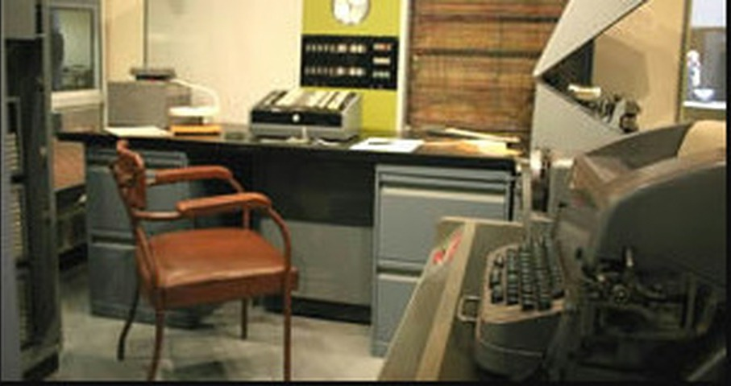

不用空调机房的晶体管计算机
Ferranti Sirius 由英国曼彻斯特的 Ferranti 公司于 1958 至 1962 年间研制。它用晶体管取代了耗电发热的真空管，插上普通办公室电源就能运转，也是莫纳什大学于 1962 年启用的首台数字计算机。
Tip: After encoding, click "Go to Receiver" to pull the 5-track paper tape out yourself—or share the link with a friend.
向左拖拽纸带拉手（或按住「按住持续拉动」按钮），纸带走过读头时，信的内容会逐字浮现。
[ 试着拉动上方的打孔纸带，展开这封等待已久的来信…… ]

MONASH ARCHIVE · COMP.1962.01上图完整保留了 1962 年操作台的棕色皮椅、绿色仪表板、圆形挂钟、桌面键盘控制盒与右侧电传打字机。
Ferranti Sirius 由英国曼彻斯特的 Ferranti 公司于 1958 至 1962 年间研制。它用晶体管取代了耗电发热的真空管，插上普通办公室电源就能运转，也是莫纳什大学于 1962 年启用的首台数字计算机。
在 1962 年，人们还不能直接在屏幕上实时编辑文字。消息与程序会先在电传打字机（即馆藏操作台右侧那台灰色机器）上打成五孔纸带，再送入光电读带机由光线逐列读取。
为了节省昂贵的磁芯存储器，Sirius 采用镍磁致伸缩声学延迟线作为内部记忆：把电信号变成细微的机械声波脉冲，在镍丝线圈里一圈圈循环传播，只要循环不断，记忆就不会消失。